The jamses package provides heatmap_se()
which is intended to “make heatmaps easy” when used with a
SummarizedExperiment object.
You can use a numeric matrix, but it won’t have many of
the fancy extra features.
About SummarizedExperiment Objects
(See SummarizedExperiment vignette for more details on the object design.)
A SummarizedExperiment is just a fancy matrix, with
these additions:
- It can store more than one
numericmatrix usingassays(). - Column annotations are stored with
SummarizedExperiment::colData(). - Row annotations are stored with
SummarizedExperiment::rowData().
It helps associate rich detail to the columns (biological samples) and rows (genes or platform measurements).
Column and Row annotations are used in heatmap_se()
- to add annotations alongside the heatmap
- to split the heatmap by useful criteria
- to center the data in meaningful ways
Several data types can be converted to
SummarizedExperiment: ExpressionSet,
DGEList, DESeqDataset,
matrix.
Design Philosophy
The heatmap_se() is “opinionated”. Default behavior
should make a heatmap very close to ideal.
Most opinions have exceptions.
(There are a lot of exceptions.)
We start with ComplexHeatmap::Heatmap(). It is amazing.
(And complex. Ha!)
heatmap_se() tries to make it easy.
Default Assumptions
Data are assumed to be log2-transformed. Usually
log2(1 + x), ymmv.-
Data are not row-scaled. (Gasp)
- We believe magnitude of change is important in Omics data. It is helpful for critical review of the data, which is the main purpose of a heatmap.
- Row-scaling shows patterns scaled to the variability on each row. It is particularly effective when the range of response is different for each row of data. Most Omics data platforms do not have this problem, and in fact the magnitude of change is more associated with the biology than to the technology.
- Row-scaling has the nice benefit that it does not require log2-transformed data. It “naturally” transforms data into “variance” (z-score) units. These units may not be biologically meaningful.
- It attempts to allow large and small magnitude effects to have similar influence, which is an important goal. We aim to achieve this goal without row-scaling.
-
Data are row-centered.
- The average signal of each row is subtracted from the row, revealing “difference from average”.
- When using log2-transformed data, the values are “log2 differences”.
- These values are equivalent to log2 fold changes as shown in a volcano plot, and equivalent to differences as shown in MA-plots.
- Why not display a heatmap using values that are consistent with those used for statistical tests, used in other figures?
-
Always use a divergent color scale with centered data.
- The color scale is blue-white-red, white at zero.
- Red is Up because this is a HEAT map.
- Blue is Down because it is cold.
- When we see a heatmap with Blue as the high color, we
refer to it as a COLD
map.
You can make a cold map, please do not call it a heat map.
-
The color scale uses a fixed range.
- The default range: -8 to +8 fold.
- The default heatmap has consistent color-to-magnitude relationship.
- We use this consistent color profile because it fits biologically relevant changes for most Omics data.
- Extremely high values do not change this range, otherwise it would compress the colors of everything else.
- When the data have small changes, the heatmap will show them as small changes.
- The range may be expanded when needed.
-
Data centering is flexible:
- By default, all samples are the controls.
- Centering can be “versus controls” using reference samples.
- Centering can be performed within independent sub-groups. We call
them
'centerby groups'. - Examples of
'centerby groups': design factor(s), sample type, tissue type, cell line, processing batch, pairing factor, - Each
'centerby group'can have its own controls.
-
Annotations are “easy”:
-
Statistical hits are “easy”:
-
sestatsadds statistical hits to the left. - Hits are colored by direction.
- The heatmap is subset to show only these hits.
-
-
Rows and columns can be grouped:
-
row_splitdefines row groups -
column_splitdefines column groups - use an
integernumber of groups, or annotationcolnames().
-
Heatmap Walkthrough
Basic Heatmap
hm <- heatmap_se(se, rowData_colnames="Class")
#> 'magick' package is suggested to install to give better rasterization.
#>
#> Set `ht_opt$message = FALSE` to turn off this message.
# draw by printing hm, or call draw() to add useful options
ComplexHeatmap::draw(hm,
column_title=attr(hm, "hm_title"),
merge_legends=TRUE)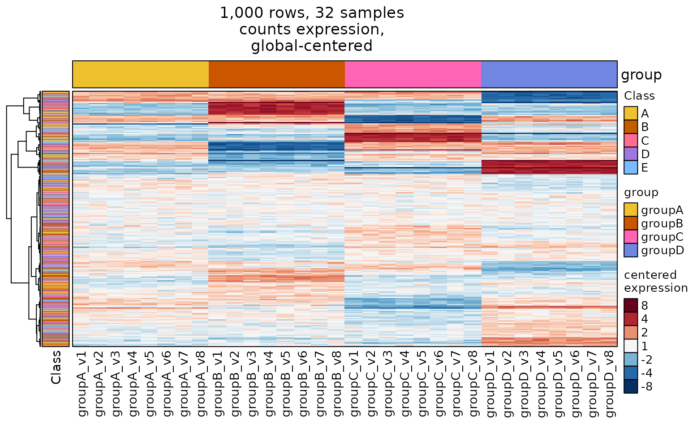
Custom Colors
sample_color_list <- list(
group=c(
groupA="gold",
groupB="darkorange2",
groupC="firebrick3",
groupD="darkorchid4"
),
Class=colorjam::group2colors(
unique(SummarizedExperiment::rowData(se)$Class)))
heatmap_se(se,
rowData_colnames="Class",
show_left_annotation_name="top",
left_annotation_name_rot=150,
sample_color_list=sample_color_list)
#> 'magick' package is suggested to install to give better rasterization.
#>
#> Set `ht_opt$message = FALSE` to turn off this message.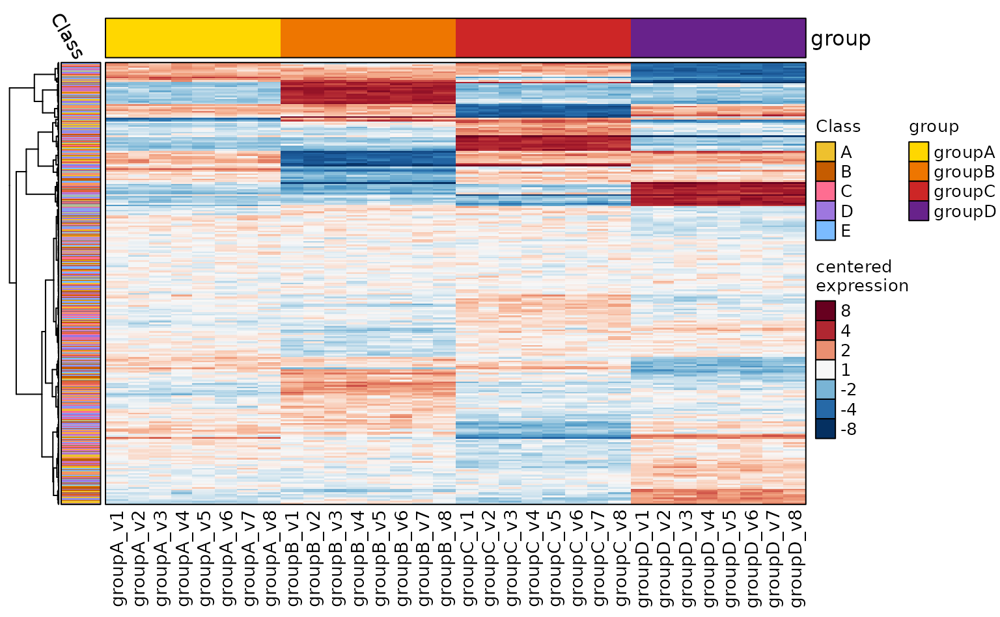
Heatmap Legend Options
ComplexHeatmap::ht_opt() allows you to customize some
stylistic defaults. One common option is:
merge_legends=TRUE which combines the annotation and
heatmap color legends so they appear together in one column.
ComplexHeatmap::ht_opt(merge_legends=TRUE)
heatmap_se(se,
rowData_colnames="Class",
show_left_annotation_name="top",
left_annotation_name_rot=150,
sample_color_list=sample_color_list)
#> 'magick' package is suggested to install to give better rasterization.
#>
#> Set `ht_opt$message = FALSE` to turn off this message.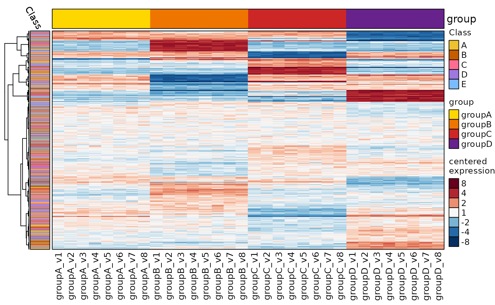
Split Rows by Annotation
heatmap_se(se,
rowData_colnames="Class",
row_split="Class",
sample_color_list=sample_color_list)
#> 'magick' package is suggested to install to give better rasterization.
#>
#> Set `ht_opt$message = FALSE` to turn off this message.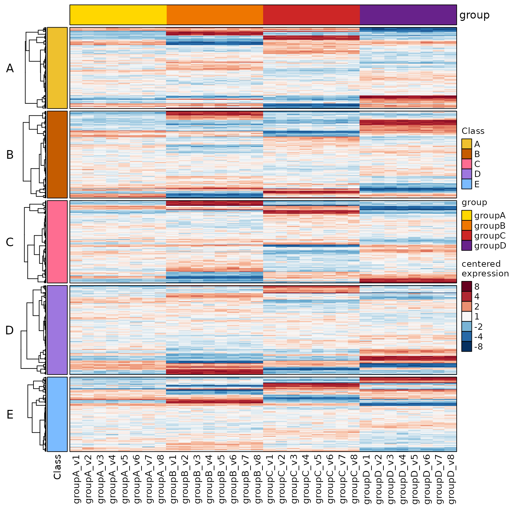
Split Rows and Columns Together
hm2 <- heatmap_se(se,
column_split=c("group"),
column_title_rot=90,
row_split=c("Class"),
rowData_colnames=c("Class"),
cluster_row_slices=FALSE,
sample_color_list=sample_color_list)
#> 'magick' package is suggested to install to give better rasterization.
#>
#> Set `ht_opt$message = FALSE` to turn off this message.
hm2drawn <- ComplexHeatmap::draw(hm2, merge_legends=TRUE)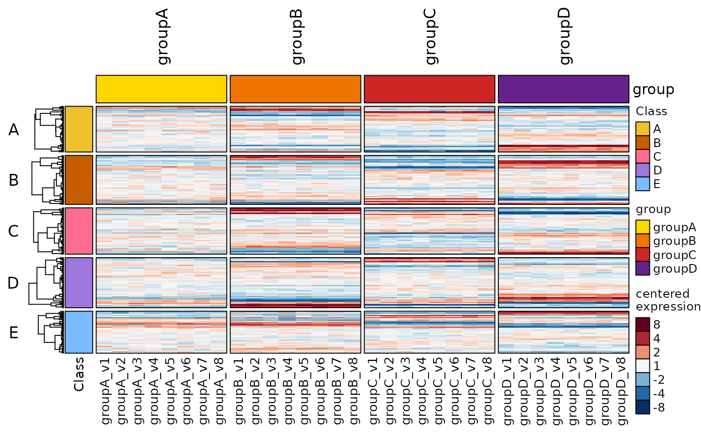
# as an example, extract the row order
# technically you should use hm2drawn, but usually hm2 is enough
hro <- jamba::heatmap_row_order(hm2drawn);
jamba::sdim(hro)
#> rows class
#> A 196 character
#> B 210 character
#> C 199 character
#> D 215 character
#> E 180 character
lapply(hro, head, 7)
#> $A
#> row_0640 row_0405 row_0417 row_0730 row_0847 row_0582 row_0858
#> "row_0640" "row_0405" "row_0417" "row_0730" "row_0847" "row_0582" "row_0858"
#>
#> $B
#> row_0087 row_0075 row_0421 row_0624 row_0238 row_0878 row_0090
#> "row_0087" "row_0075" "row_0421" "row_0624" "row_0238" "row_0878" "row_0090"
#>
#> $C
#> row_0834 row_0593 row_0670 row_0823 row_0066 row_0902 row_0422
#> "row_0834" "row_0593" "row_0670" "row_0823" "row_0066" "row_0902" "row_0422"
#>
#> $D
#> row_0349 row_0755 row_0633 row_0784 row_0208 row_0265 row_0382
#> "row_0349" "row_0755" "row_0633" "row_0784" "row_0208" "row_0265" "row_0382"
#>
#> $E
#> row_0948 row_0115 row_0874 row_0165 row_0227 row_0598 row_0781
#> "row_0948" "row_0115" "row_0874" "row_0165" "row_0227" "row_0598" "row_0781"
# (the names will differ from values when `row_labels` are customized)Center Using a Control Group
This heatmap calculates the mean for the control samples
controlSamples, then uses that value for data
centering.
# center by WildType samples
# - controlSamples
# - control_label
hm2 <- heatmap_se(se,
controlSamples=rownames(subset(
SummarizedExperiment::colData(se), group %in% "groupA")),
control_label="vs groupA",
column_split=c("group"),
column_title_rot=90,
row_split=c("Class"),
rowData_colnames=c("Class"),
cluster_row_slices=FALSE,
sample_color_list=sample_color_list)
#> 'magick' package is suggested to install to give better rasterization.
#>
#> Set `ht_opt$message = FALSE` to turn off this message.
hm2drawn <- ComplexHeatmap::draw(hm2,
column_title=attr(hm2, "hm_title"),
merge_legends=TRUE)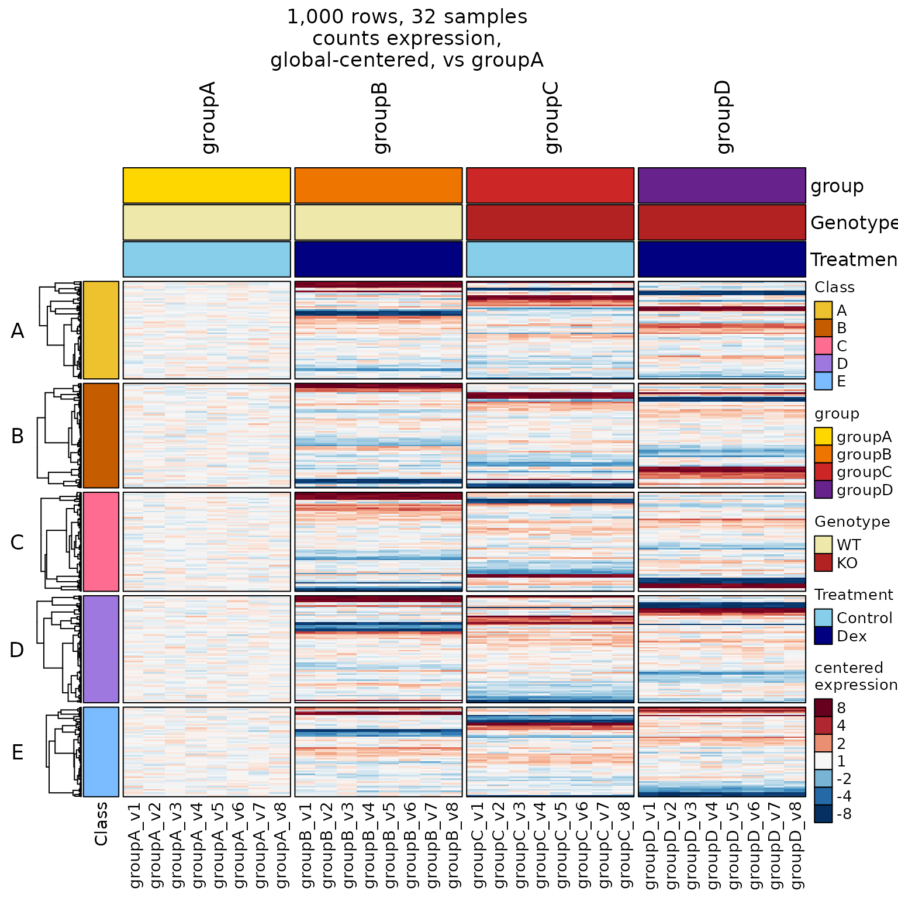
Add Callout Labels for a Subset of Rows
You can label a subset of genes of interest, useful especially when there are too many rows to label everything.
# add "callout" labels for a subset of rows
mark_rows <- c(sample(jamba::heatmap_row_order(hm2drawn)[[1]], size=5),
sample(jamba::heatmap_row_order(hm2drawn)[[1]], size=3));
# turn off ComplexHeatmap warning when using RStudio
ComplexHeatmap::ht_opt(message=FALSE)
hm3 <- heatmap_se(se,
mark_rows=mark_rows,
controlSamples=rownames(
subset(SummarizedExperiment::colData(se), group %in% "groupA")),
control_label="vs groupA",
column_split=c("group"),
column_title_rot=90,
row_split=c("Class"),
rowData_colnames=c("Class"),
cluster_row_slices=FALSE,
sample_color_list=sample_color_list)
ComplexHeatmap::draw(hm3,
column_title=attr(hm3, "hm_title"),
merge_legends=TRUE)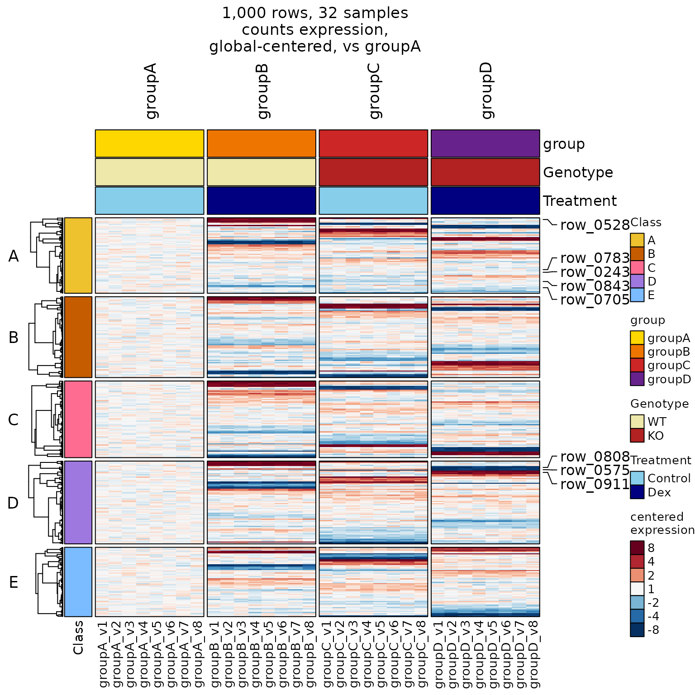
Display Statistical Hits
The argument sestats is used to display statistical hits
on the left of the heatmap. It can be one of a few data types:
-
listnamed by contrast, containingnumericvectors- Each
numericvector is named bygene, which should matchrownames()of the data. - Any non-zero value is considered a “hit”, and usually the vector
contains the sign
1or-1.
- Each
numericmatrix whererownames()match the data, andcolnames()are used for each comparison.SEStatsobject produced byse_contrast_stats().
# sestats can accept list, incidence matrix, hit_array, or sestats
# this example defines random set of hits
sestats_list <- list(
contrast1=setNames(sample(c(1, -1), replace=TRUE, size=50),
sample(rownames(se), size=50)),
contrast2=setNames(sample(c(1, -1), replace=TRUE, size=50),
sample(rownames(se), size=50)))
hm4 <- heatmap_se(se,
controlSamples=rownames(
subset(SummarizedExperiment::colData(se), group %in% "groupA")),
control_label="vs groupA",
sestats=sestats_list,
column_split=c("group"),
row_split=c("Class"),
rowData_colnames=c("Class"),
cluster_row_slices=FALSE,
sample_color_list=sample_color_list)
ComplexHeatmap::draw(hm4,
column_title=attr(hm4, "hm_title"),
merge_legends=TRUE)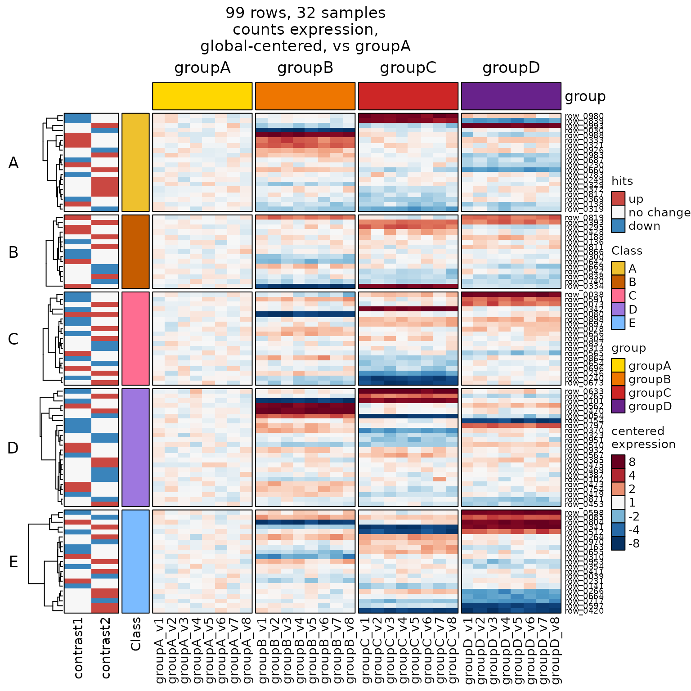
Run Limma Statistics with se_contrast_stats()
The se_contrast_stats() function is a wrapper to
limma, and its supporting functions lmFit(),
fitContrasts(), topTable(), and even
voom() when appropriate. It also generates stats tables for
each contrast in one step, then annotates statistical hits that meet the
cutoff criteria.
The output is SEStats object, which is a convenient way
to store results from multiple statistical contrasts. It can also
perform contrasts with multiple assay_names.
# it doesn't take much effort to run stats really quick
sedesign <- groups_to_sedesign(SummarizedExperiment::colData(se)[, "group", drop=FALSE])
contrast_names(sedesign) <- jamba::vigrep("-groupA", contrast_names(sedesign))
sestats <- se_contrast_stats(se=se,
fold_cutoff=4,
sedesign=sedesign, assay_name="counts")
hm4s <- heatmap_se(se,
controlSamples=rownames(
subset(SummarizedExperiment::colData(se), group %in% "groupA")),
control_label="vs groupA",
sestats=sestats,
column_split=c("group"),
row_split=6,
rowData_colnames=c("Class"),
cluster_row_slices=FALSE,
sample_color_list=sample_color_list)
ComplexHeatmap::draw(hm4s,
column_title=attr(hm4s, "hm_title"),
merge_legends=TRUE)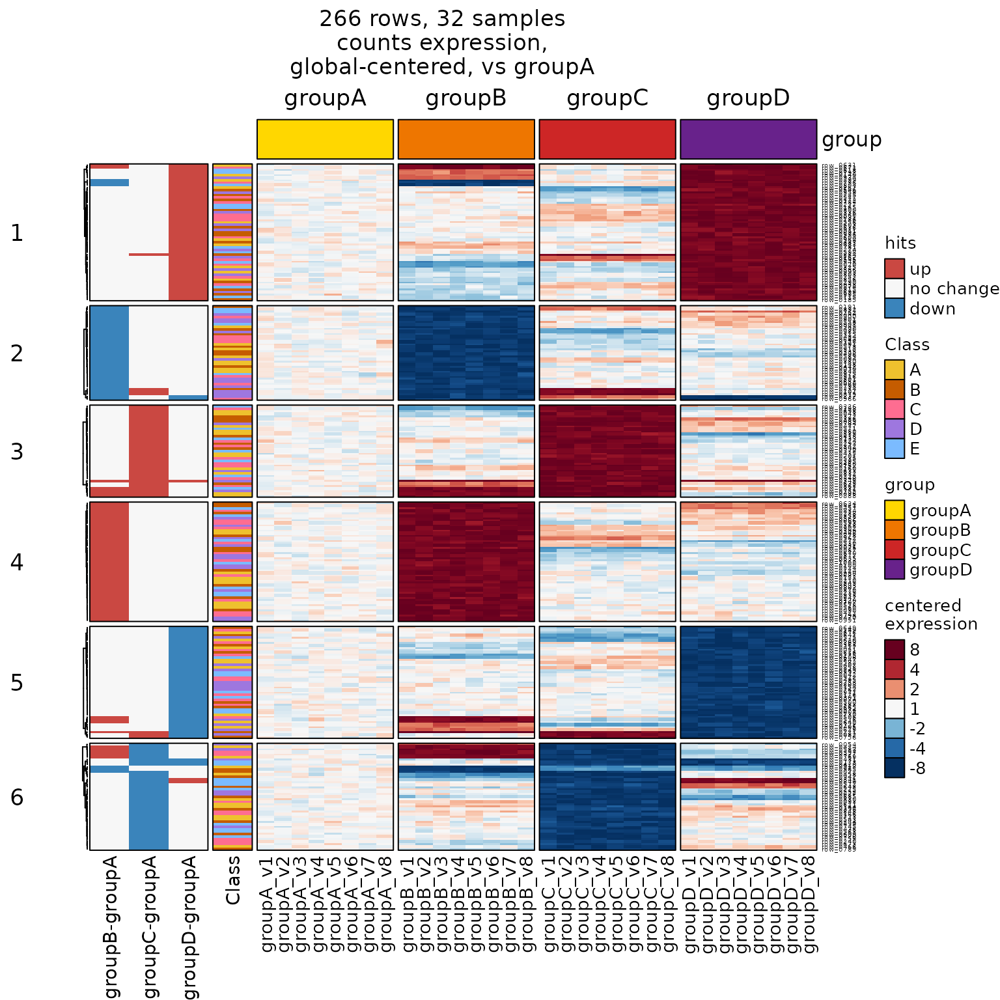
Drill Down into a Row Cluster
When clustering rows, it is sometimes useful to look at a particular
row subcluster to see more detail, perhaps just to read the row labels.
The argument row_subcluster does the work of determining
the row order, and generating a new heatmap with the same row order,
labeled using the same cluster names.
# for fun, "drill down" into cluster 5
hm4s_4 <- heatmap_se(se,
controlSamples=rownames(
subset(SummarizedExperiment::colData(se), group %in% "groupA")),
control_label="vs groupA",
sestats=sestats,
column_split=c("group"),
row_split=6,
row_subcluster=4,
rowData_colnames=c("Class"),
cluster_row_slices=FALSE,
sample_color_list=sample_color_list)
#> Warning: The heatmap has not been initialized. You might have different results
#> if you repeatedly execute this function, e.g. when row_km/column_km was
#> set. It is more suggested to do as `ht = draw(ht); row_order(ht)`.
ComplexHeatmap::draw(hm4s_4,
column_title=attr(hm4s_4, "hm_title"),
merge_legends=TRUE)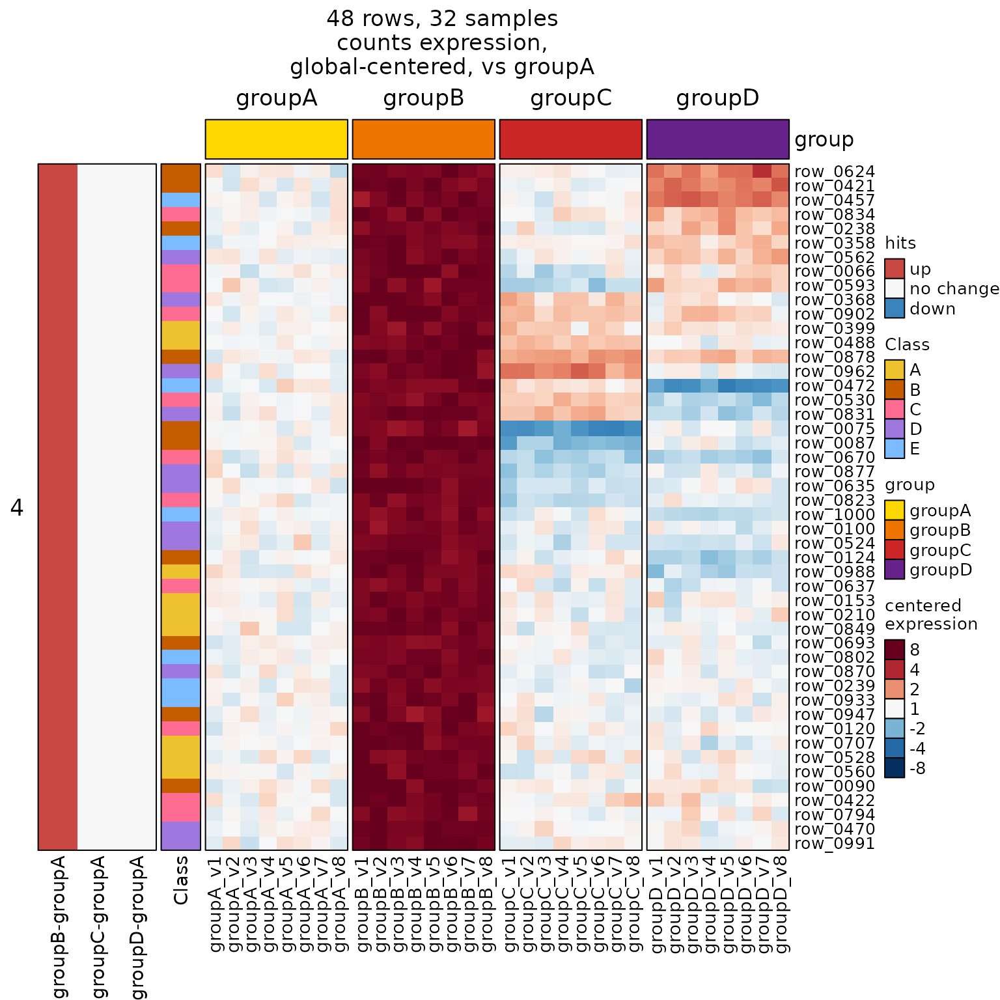
Use an Incidence Matrix for sestats
# sestats can be provided as an incidence matrix
# convert sestats to list
sestats_hitlist <- hit_array_to_list(sestats)
# convert sestats hitlist to incidence matrix
# - for fun, use only the first two contrasts
sestats_hitim <- venndir::list2im_value(sestats_hitlist[1:2])
print(head(sestats_hitim));
#> groupB-groupA groupC-groupA
#> row_0022 -1 -1
#> row_0030 -1 0
#> row_0066 1 0
#> row_0075 1 0
#> row_0080 -1 0
#> row_0087 1 0
# convert sestats_list to signed incidence matrix
sestats_im <- venndir::list2im_value(sestats_list)
print(head(sestats_im, 10));
#> contrast1 contrast2
#> row_0230 1 0
#> row_0428 1 0
#> row_0080 1 1
#> row_0839 -1 0
#> row_0342 -1 0
#> row_0370 -1 0
#> row_0562 1 0
#> row_0783 -1 0
#> row_0333 1 0
#> row_0687 -1 0
# if the list has items (no direction) use venndir::list2im_opt()
hm5 <- heatmap_se(se,
controlSamples=rownames(
subset(SummarizedExperiment::colData(se), group %in% "groupA")),
control_label="vs groupA",
sestats=sestats_hitim,
column_split=c("group"),
rowData_colnames=c("Class"),
cluster_row_slices=FALSE,
sample_color_list=sample_color_list)
ComplexHeatmap::draw(hm5,
column_title=attr(hm5, "hm_title"),
merge_legends=TRUE)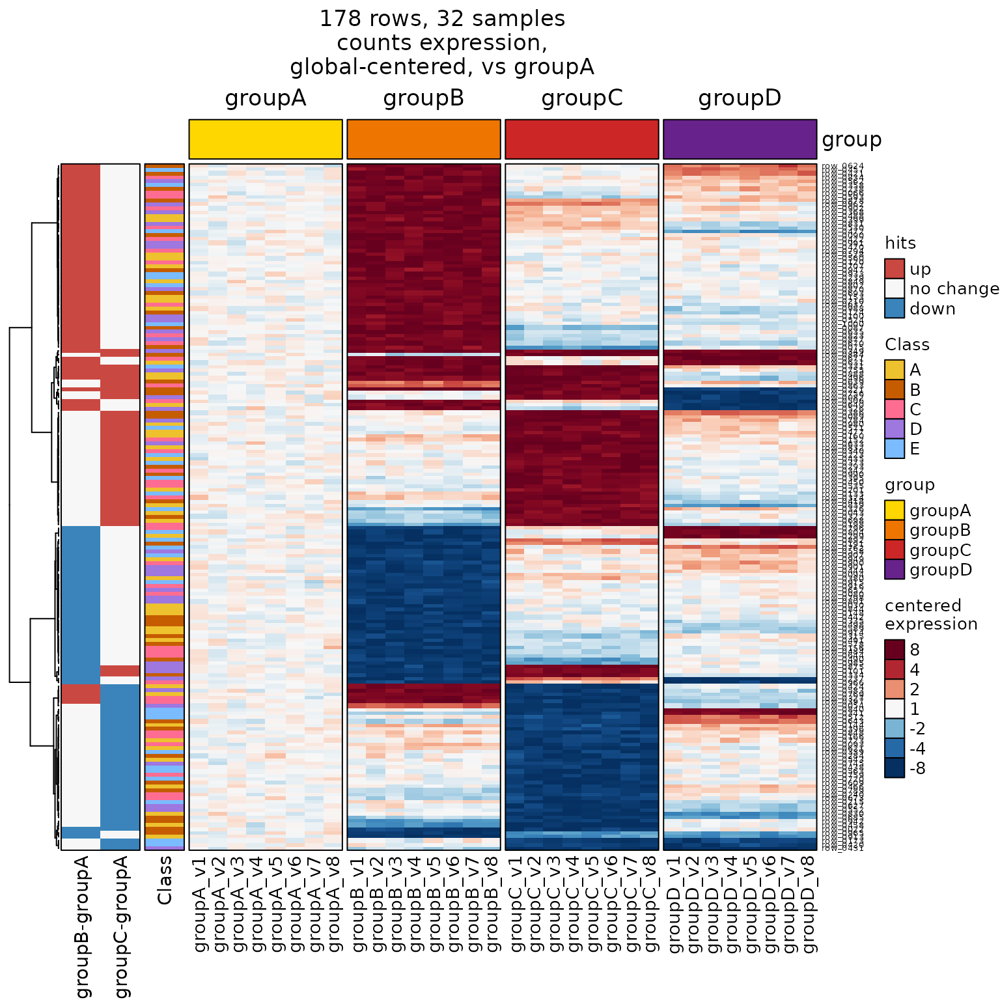
Customize Column Label Fonts
This option is rarely used, but sometimes helpful. The column labels can be customized to use a custom font, bold fontface, or even custom colors.
# customize column label fonts using column_names_gp
column_bold <- ifelse(
SummarizedExperiment::colData(se)$group %in% "groupA",
2, 1);
hm6 <- heatmap_se(se,
controlSamples=rownames(
subset(SummarizedExperiment::colData(se), group %in% "groupA")),
control_label="vs WildType",
column_names_gp=grid::gpar(col=sample_color_list$group[
as.character(SummarizedExperiment::colData(se)$group)],
font=column_bold),
column_split=c("group"),
row_split=c("Class"),
rowData_colnames=c("Class"),
cluster_row_slices=FALSE,
sample_color_list=sample_color_list)
ComplexHeatmap::draw(hm6,
column_title=attr(hm6, "hm_title"),
merge_legends=TRUE)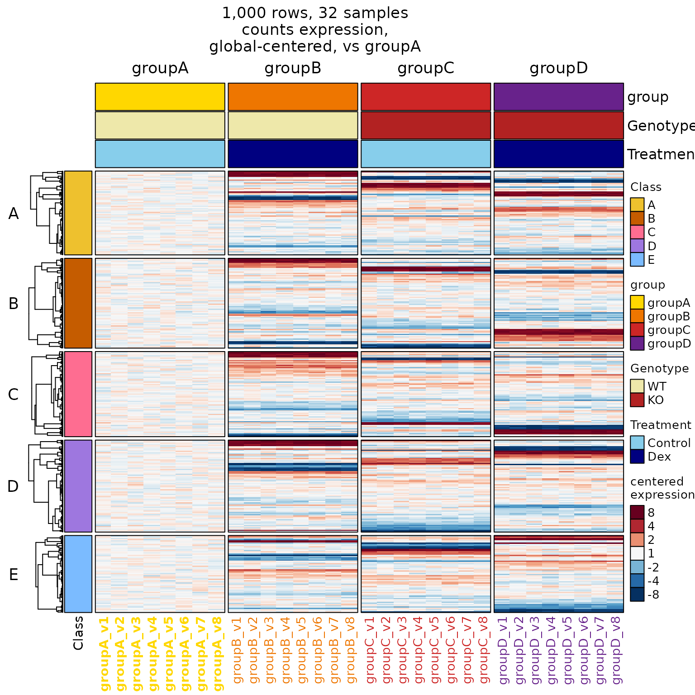
Create a Correlation Heatmap
Any heatmap can be displayed as a “correlation heatmap”. The
correlation matrix uses the same data that would have been displayed as
the centered heatmap, except the centered data are used in the
correlation cor() method.
Using centered data for correlation improves the sensitivity especially with biological data. It determines correlation using “difference from average” which tells whether any changes from average are consistent within sample groups, or across sample groups.
A good rule of thumb, if you see a “shadow diagonal line” in this
plot, it can be one indication of a sample pairing effect. To test a
sample pairing issue, you may want to use centerby_colnames
with the pairing factor column name.
# correlation=TRUE, any heatmap becomes a sample correlation heatmap
hm6corr <- heatmap_se(se,
correlation=TRUE,
apply_hm_column_title=TRUE,
controlSamples=rownames(
subset(SummarizedExperiment::colData(se), group %in% "groupA")),
control_label="vs groupA",
column_names_gp=grid::gpar(col=sample_color_list$group[
as.character(SummarizedExperiment::colData(se)$group)],
font=rep(c(1, 2, 1), c(3, 5, 24))),
column_split=c("Group"),
sample_color_list=sample_color_list)
ComplexHeatmap::draw(hm6corr,
merge_legends=TRUE)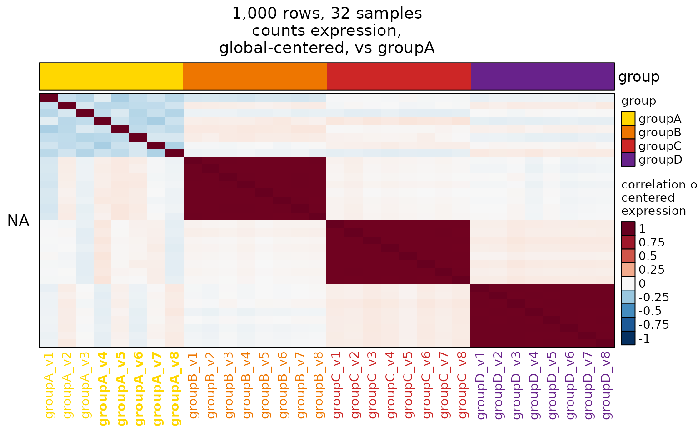
Final Heatmap with Grouped Column Labels
The final heatmap combines several conveniences:
-
apply_hm_column_title=TRUEapplies a heatmap title ascolumn_title. -
top_colnameshides the annotation. -
heatmap_column_group_labels()adds grouped labels above the heatmap. -
hm_title_bufferadjusts the whitespace for the title and grouped lines.
SummarizedExperiment::colData(se)$Genotype <- rep(c("WT", "KO"), each=16);
SummarizedExperiment::colData(se)$Treatment <- rep(c("Control", "Dex"), each=8);
hm7 <- heatmap_se(se,
apply_hm_column_title=TRUE,
hm_title_buffer=3,
controlSamples=rownames(
subset(SummarizedExperiment::colData(se), group %in% "groupA")),
control_label="vs groupA",
sestats=sestats_list,
top_colnames=FALSE,
column_split=c("group"),
row_split=c("Class"),
rowData_colnames=c("Class"),
cluster_row_slices=FALSE,
sample_color_list=sample_color_list)
hm7_drawn <- ComplexHeatmap::draw(hm7,
merge_legends=TRUE)
# now add fancy labels
heatmap_column_group_labels(
hm_group_list=c("Treatment", "Genotype"),
se=se,
hm_drawn=hm7_drawn)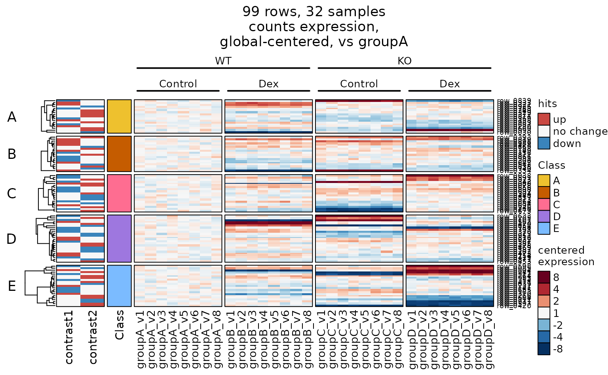
# Note: this step does not work consistently inside RStudio plot pane,
# in that case call dev.new() then run the step above to create hm7_drawn,
# then repeat the step below
#
# adjust the height of labels with argument y_offset_lines
# with positive values (upward), or negative values (downward).